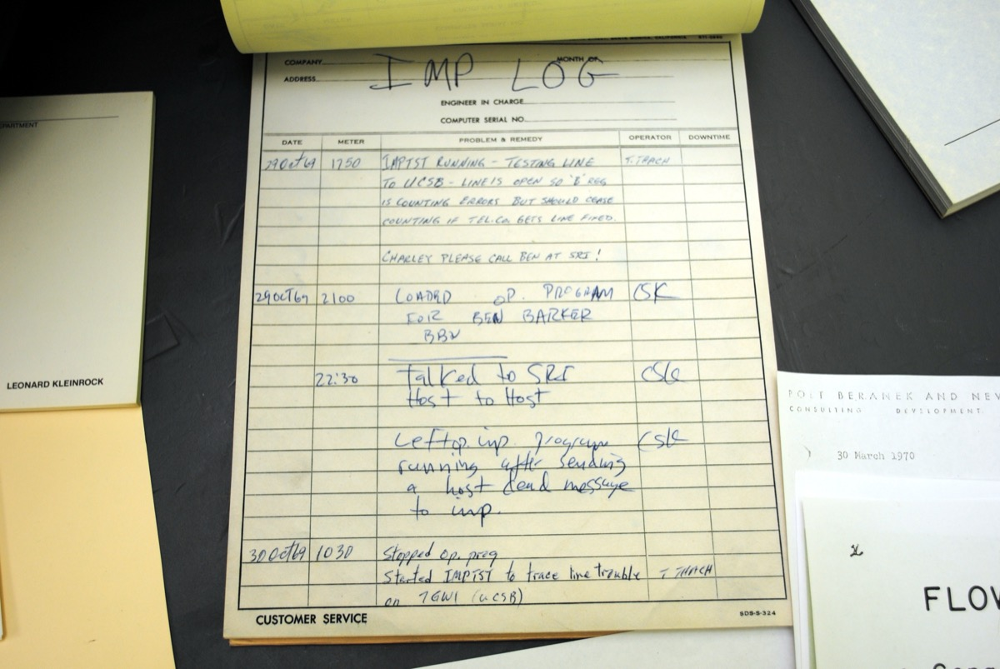
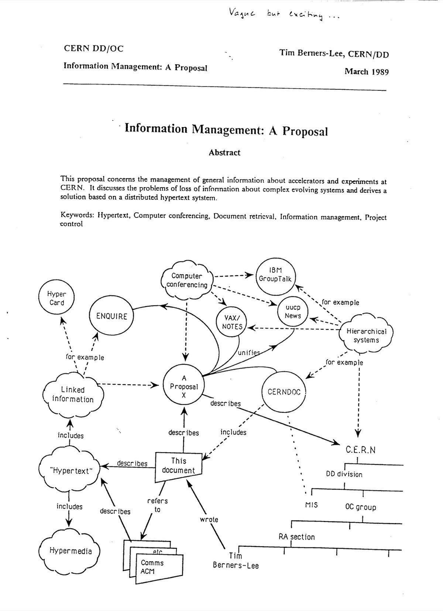
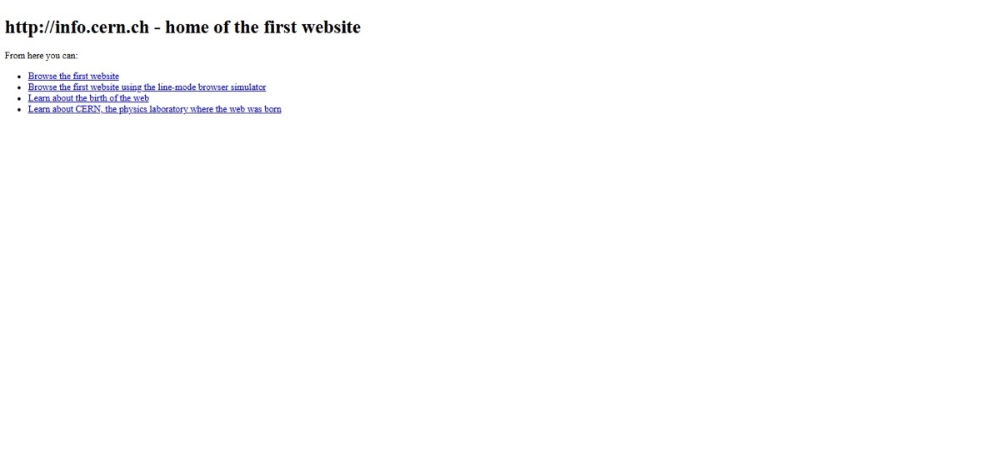

How Information Changed the World
Chapter Five
The Typo Heard Round the World
The Internet · 1969–2000s
The Moment
It is 10:30 at night on October 29, 1969. In a basement laboratory at UCLA — the University of California, Los Angeles — a 21-year-old graduate student named Charley Kline sits at a clunky military-green terminal connected to a refrigerator-sized computer.
A thousand miles away, at the Stanford Research Institute in northern California, another graduate student is sitting at another terminal connected to another computer.
The two computers are linked through a single new long-distance wire connection — one of the first digital networks ever built. The U.S. government has been quietly paying for the research, mostly because the Pentagon wants a communications system that could survive a nuclear attack.
Tonight, the new network is going to be tested. Live. With a single word.
Kline's job is simple. He has to log in to the Stanford computer from his terminal in Los Angeles. To do that, he has to type the word LOGIN. If the system is working, the Stanford computer should accept the word and respond.
He types L. The Stanford machine acknowledges it.
He types O. The Stanford machine acknowledges it.
He types G.
The Stanford machine crashes.
The first message ever sent on the internet was the word "lo."
The two students get the system running again about an hour later, and the full word LOGIN goes through. But Kline has already written the first attempt down in his lab notebook — and the lab still has the notebook. It survives today in a UCLA archive. You can find a photo of the page online and read it for yourself.
A massive invention — the one that would eventually carry most of human communication — began with a typo and a crash.

Before
Until that 1969 night, every computer in the world was an island.
A computer at a university could do incredible mathematics in seconds. The same computer, ten feet away from another computer, had no way to share that mathematics. If you wanted the answer on the other machine, you wrote it down on paper, walked it across the room, and typed it in yourself.
This was true everywhere. The room-sized computers at one American university could not talk to the room-sized computers at another. The computer in your bank could not talk to the computer at the airline you wanted to fly with. Even when computers were in the same building, on the same floor, they were strangers to one another.
A network — a system in which any computer could send a message to any other computer, anywhere — sounded, in 1969, like science fiction. A small group of researchers, funded by a Pentagon agency called ARPA, decided to try to build one anyway. They called the experiment ARPANET. It is the great-grandfather of every connection you make online today.
The Tech
The new network worked in a strange and clever way, very different from the telegraph or the radio.
A traditional telephone call worked by opening a single dedicated wire path between caller and listener for the whole call. The new network did not work like that.
Instead, the engineers behind ARPANET broke every message into small pieces called packets. Each packet was labelled with its destination and a number. The packets were then thrown into the network and allowed to find their own way through whatever wires were currently working, hopping from one computer to the next like parcels in a postal system. At the destination, the packets were reassembled into the original message in the right order.
This is called packet switching. It is still the heart of how every email, web page, video call, and online game in the world works.
The next big step came twenty years later, in 1989, when a quiet British physicist named Tim Berners-Lee, working at CERN — Europe's giant physics laboratory in Switzerland — wrote a 20-page proposal called Information Management: A Proposal. His boss famously scribbled on the cover: "Vague but exciting."
The proposal described a system in which any document on any networked computer could link, with a single click, to any other document anywhere else. Berners-Lee called it the World Wide Web. By the end of 1990, he had built the first browser — the program that lets you view a web page. By August 1991, the first website was online. By 1993, anyone with a phone line and a modem could load a page. Within a decade, the web had changed almost everything about how humans found, shared, and stored information.

The Ripples
The first thing the new network replaced was the letter.
Email, invented in 1971 by an ARPANET engineer named Ray Tomlinson, spread like wildfire among researchers in the 1970s and 80s, then among everyone else in the 1990s. A message that used to take three days now took three seconds — and cost nothing.
Then came the search engine.
For most of human history, finding a specific piece of information meant going to a library, knowing which book to ask for, and reading until you found the answer. By 1998, a small American startup called Google had built a system that could search billions of web pages in less than a second. Two decades later, more questions were being asked of Google every day than had been asked of every reference librarian in history combined.
Then came shopping. Then came reading the news. Then came almost everything else. By 2005, an online bookstore called Amazon was already the cheapest place to buy almost any book. By 2010, the same company was selling almost everything else. Whole industries — travel agents, video rental stores, encyclopedia publishers, paper map makers, classified-ad newspapers — were quietly disappearing.
There was a brief, frightening crash along the way. From 1995 to 2000, investors poured enormous sums of money into any company that put a ".com" in its name, on the belief that the internet would make them rich. Most of those companies turned out to be worthless. In the spring of 2000, the so-called "dot-com bubble" burst, and trillions of dollars vanished within a few months. Many people declared the internet a failed experiment.
It was not. It was just at the boring middle of its arc.
Within five years, the same network that had crashed the stock market was quietly handling more letters, more news, more music, more shopping, and more human conversation than every prior information technology in history combined.
And there was one more thing about the early internet that almost never gets mentioned. Tim Berners-Lee, the inventor of the World Wide Web, could have charged for it. He could have patented his idea, licensed it to companies, and become one of the richest people in human history. Instead, in 1993, he convinced CERN to release the entire technology — the web, the browser, the rules that make it all work — into the public domain. Free for anyone to use, forever. Without that one decision, almost nothing you do online today would exist in the form it does.

The Pattern
This chapter is different from the four before it. Most of it sits squarely in the miracle stage.
For about thirty years — from the 1969 typo through the late 1990s — the internet was the breathtaking new thing. Newspapers wrote about it the way they had once written about radio and television. The same grand predictions returned. World peace. The end of distance. The end of ignorance.
By the late 1990s and early 2000s, you can start to see ordinary arriving. Email replacing the post office. Search engines replacing the library reference desk. Shopping happening online without anyone celebrating it.
The weaponized stage — the one this book has shown four times already — has not happened yet. Or rather, it has just begun. It is the entire next chapter.
The arc is loaded. The hammer has not fallen.
Pattern Tracker
Chapter 5: The Internet
Now
The internet has already moved from miracle to ordinary so completely that most of us no longer notice it. That, by itself, is part of the pattern: the technology that disappears into the background is the one that has the most power. The weaponized stage of this story starts in the next chapter.
Reflect
- The first message ever sent on the internet was a typo. What does that tell us about how big, world-changing inventions actually begin?
- Tim Berners-Lee gave the World Wide Web away to the public domain. He could have made billions of dollars instead. Why does that decision matter — and would the web exist today if he had chosen differently?